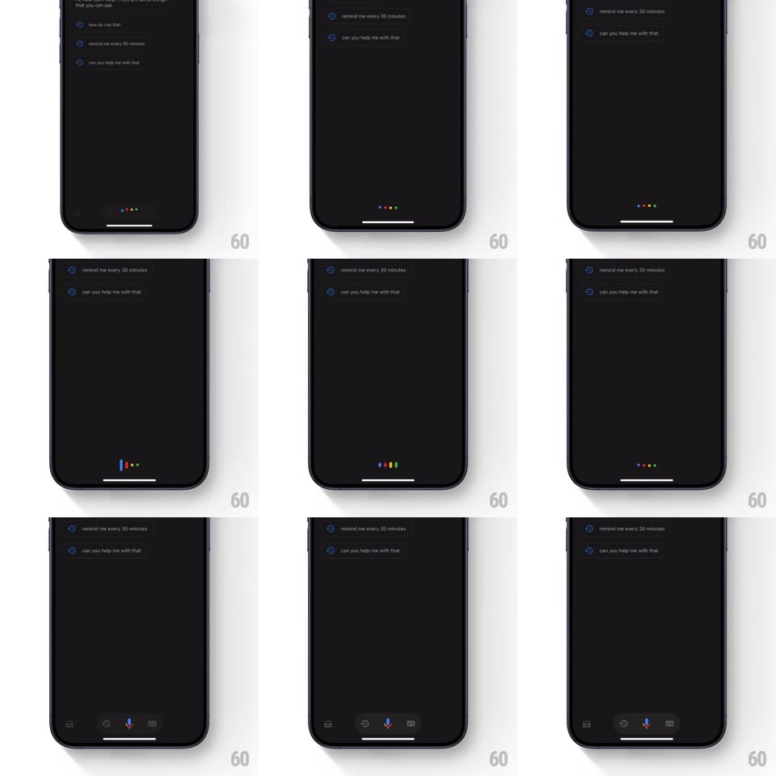

Media
Frame-by-frame

Rebuild this interaction 1:1: Google Assistant's mic activation - the four signature dots (blue, red, yellow, green) bounce in a wave, then morph into vertical waveform bars while a bottom control bar slides up with the mic at its center, then settle back into dots.

Rebuild this interaction 1:1: Google Assistant's mic activation - the four signature dots (blue, red, yellow, green) bounce in a wave, then morph into vertical waveform bars while a bottom control bar slides up with the mic at its center, then settle back into dots. ## Integration Integration: stack-agnostic spec - springs given as stiffness/damping, timed motions as duration + curve; map every value to your framework and animation library of choice. ## Scene Dark Assistant sheet (suggestion rows above). Bottom center: the four dots on the baseline. Activated state: a dark control bar with keyboard, mic, and lens icons; the Assistant mark at its center. ## Motion spec Pattern: dot-wave to waveform morph. - Idle: four dots (blue, red, yellow, green) sit on the baseline, occasionally doing a gentle sequential bounce (each dot hops 6px, 120ms apart, 500ms wave). - Activation: the dots stretch upward into rounded vertical bars (spring ~380/22, each bar's height oscillating - blue tallest first, amplitude alternating), reading as a listening waveform; heights animate per-frame with 80ms phase offsets. - Simultaneously the control bar slides up from the bottom edge (spring ~330/24) and the waveform bars sink down INTO it, docking as the colored mic icon at the bar's center (300ms morph: bars converge, merge into the mic glyph, colors retained in the mic's dot accents). - Deactivation reverses: the mic dissolves back into four dots that rise out of the bar (350ms), the bar slides down, the dots resume their idle bounce. ## Calibration - Dot order is ALWAYS blue, red, yellow, green - Google's signature sequence. - The morph path is vertical: dots grow up, bars sink down - never a horizontal travel. ## Reduced motion Dots crossfade to the mic icon; bar slides up without the wave. ## Don't miss - The waveform amplitude should feel like it's hearing - jitter heights +-20% per frame while active. - The dots never leave the screen; they ARE the mic, temporarily rearranged.